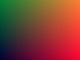

Módulo 4 · La GPU por dentro
Atributos, uniforms y varyings
Los tres canales por los que viajan los datos hacia y dentro de la GPU, cada uno con su frecuencia: por vértice, por dibujo y por fragmento. Sus reglas exactas, sus silencios (un uniform mal escrito no da error) y la matemática de la interpolación con corrección de perspectiva, con el temblor de la PlayStation como contraejemplo.
Al terminar esta lección
- Sabrás elegir el canal adecuado para cada dato según su frecuencia de cambio.
- Dominarás los uniforms: que son estado del programa, que valen 0 hasta que los asignas, cómo se buscan sus ubicaciones (incluidos arrays y structs) y por qué algunos «desaparecen».
- Deducirás la fórmula de la interpolación con corrección de perspectiva y verás qué pasa sin ella.
- Usarás
flaty sabrás qué vértice decide su valor. - Dibujarás sin buffers con
gl_VertexIDy usarás atributos constantes.
Tres canales, tres frecuencias
Un shader es una función que se ejecuta millones de veces. Unas entradas cambian en cada ejecución y otras son iguales para todas. La API tiene un canal distinto para cada frecuencia, y elegir bien el canal es la primera decisión de diseño de cualquier efecto:
| Canal | Lo escribe | Lo lee | Cambia | Ejemplos | Límite (nuestra máquina) |
|---|---|---|---|---|---|
atributo (in del vertex shader) | los buffers, vía VAO | vertex shader | en cada vértice | posición, normal, uv, color de vértice | 16 atributos |
| uniform | JavaScript (gl.uniform*) | los dos shaders | entre dibujos | matrices, tiempo, ratón, color de un material | 1 024 vec4 por shader |
varying (out → in) | vertex shader | fragment shader | en cada fragmento (interpolado) | uv, normal, color interpolado | 30 vec4 |
| textura | JavaScript o un dibujo previo | los dos shaders | entre dibujos | imágenes, tablas de datos grandes | 16 por shader |
Los límites salen de gl.getParameter: MAX_VERTEX_ATTRIBS (16), MAX_VERTEX_UNIFORM_VECTORS y MAX_FRAGMENT_UNIFORM_VECTORS (1 024 cada uno), MAX_VARYING_VECTORS (30) y MAX_TEXTURE_IMAGE_UNITS (16), en Chrome sobre el M1. La especificación de WebGL2 solo garantiza bastante menos (por ejemplo, 256 vectores de uniforms en el vertex shader, 224 en el fragment y 15 de varyings): si tu código tiene que funcionar en cualquier móvil, no cuentes con los números de tu máquina. Las texturas tienen su propia lección (5.5); aquí nos ocupamos de los otros tres.
Atributos: repaso, y el truco del valor constante
Los atributos los desmontamos a fondo en 4.4: bytes en un buffer, descritos por el VAO, convertidos al tipo del shader. Queda una pieza que casi nadie conoce: ¿qué recibe el shader si el atributo está deshabilitado?
Recibe un valor constante, el mismo para todos los vértices, que se fija con gl.vertexAttrib4f(location, x, y, z, w) (y sus variantes vertexAttrib1f…vertexAttrib4fv, más vertexAttribI4i/vertexAttribI4ui para atributos enteros). Si nunca lo fijaste, vale $(0, 0, 0, 1)$. Lo comprobamos en Chrome: un triángulo cuyo color sale de un atributo deshabilitado se pinta negro opaco; tras vertexAttrib4f(3, 1.0, 0.5, 0.25, 1.0), se pinta de ese color. Y como vimos en 4.4, ese valor es estado del contexto, no del VAO.
Imagina un shader que usa un color por vértice, y una malla que no tiene colores. En lugar de escribir otro shader o de rellenar un buffer con el mismo color repetido mil veces, deshabilita el atributo y fija su valor: gl.disableVertexAttribArray(locColor); gl.vertexAttrib4f(locColor, 1, 0.5, 0.2, 1);. El mismo shader sirve para las dos mallas, sin tocar una línea de GLSL ni gastar un byte de buffer. Funciona porque el vertex fetch no lee memoria para ese atributo. (Recuerda que disableVertexAttribArray sí es estado del VAO: deshabilítalo con el VAO de esa malla enlazado.)
Uniforms: estado del programa
Un uniform es una variable del shader que vale lo mismo en todas las invocaciones de un dibujo. En GLSL se declara con uniform; en JavaScript se le da valor con la familia gl.uniform*. Ese es el modelo de uso. El modelo mental exacto tiene más matices, y cada uno es la explicación de algún comportamiento raro:
1. Pertenecen al programa, no al contexto
Cada programa enlazado tiene su propio almacén de uniforms. Si dos programas declaran un uniform vec3 u_color, son dos variables distintas. Por eso gl.uniform* no recibe el programa como argumento: actúa sobre el programa en uso (el de gl.useProgram). Otra vez la máquina de estados de 4.1.
- Sin programa en uso,
gl.uniform1f(loc, 2.0)daINVALID_OPERATION(lo medimos; Chrome escribe en la consolalocation is not from the associated program). - Con una ubicación obtenida de otro programa, también
INVALID_OPERATION: una ubicación es un «ticket» ligado a un programa concreto, aunque el nombre coincida. - Los valores persisten: si asignas
u_coloren el programa A, cambias al B y vuelves al A,u_colorsigue teniendo su valor. No hace falta reasignar cada frame lo que no cambia (y no hacerlo ahorra llamadas). - Volver a enlazar el programa (
linkProgramotra vez) los reinicia a 0 (medido).
2. Valen 0 hasta que los asignas
Todo uniform empieza a cero: 0.0, vec3(0.0), 0, false, una matriz llena de ceros. Lo comprobamos leyendo los valores con gl.getUniform nada más enlazar. Consecuencias: un uniform de escala que olvidas asignar hace que la geometría desaparezca (todo se multiplica por 0); una matriz sin asignar colapsa todos los vértices en el origen; un sampler sin asignar lee de la unidad de textura 0 (que casualmente suele ser la correcta, y por eso el olvido pasa inadvertido… hasta que usas dos texturas).
3. Las ubicaciones, y los uniforms que desaparecen
Para asignar un uniform hace falta su ubicación (location): gl.getUniformLocation(programa, "u_color"). En WebGL es un objeto opaco (WebGLUniformLocation); en OpenGL de escritorio es un entero. Y aquí está la trampa más famosa de todas: si el uniform no existe, getUniformLocation devuelve null… y gl.uniform3f(null, …) no hace nada y no da error. Ni siquiera sin programa en uso (medido). Hay dos formas de caer en ello:
- Una errata en el nombre (
"u_colour"por"u_color"). - El compilador eliminó el uniform porque no influye en ninguna salida del shader: lo declaraste pero no lo usas, o lo usas en un cálculo cuyo resultado nunca llega a
gl_Positionni al color. Un uniform eliminado no es «activo»: no aparece engl.getProgramParameter(p, gl.ACTIVE_UNIFORMS)y su ubicación esnull. En moderngl,programa["u_noUsado"]lanzaKeyError; en OpenGL de escritorio,glGetUniformLocationdevuelve −1, que también se ignora en silencio (lo verás en 4.6).
Síntoma: llamas a gl.uniform1f(loc, valor) cada frame y el shader se comporta como si el uniform valiera 0 (o su valor anterior). No hay ningún error en la consola ni en getError.
Causa: loc es null: el nombre está mal escrito, o el compilador eliminó el uniform por no usarse (a veces porque comentaste la línea que lo usaba mientras depurabas). uniform*(null, …) se ignora por diseño, sin error. Otra causa silenciosa: asignaste el valor con otro programa en uso… en el suyo, que sí lo tenía, pero dibujas con un programa distinto cuyo u_color nunca asignaste (cada programa tiene el suyo).
Solución: al crear el programa, comprueba las ubicaciones: if (loc === null) console.warn('u_tiempo no existe o no se usa'). Lista los uniforms activos con getActiveUniform (como hace GLKit.uniforms). Y recuerda que el aviso también salta cuando el uniform no se usa: no siempre es un error.
Ejemplo 4.5.1 — ¿Por qué mi u_tiempo es null?
Este fragment shader declara dos uniforms, pero getUniformLocation(p, "u_tiempo") devuelve null y el de "u_color" no. ¿Por qué?
- El compilador trabaja hacia atrás desde las salidas (
fragColor,gl_Position,gl_FragDepth): todo lo que no contribuye a ellas es código muerto y se elimina. ondano se usa enfragColor, así que la línea desindesaparece, y con ella el único uso deu_tiempo. El uniform queda inactivo.- Diagnóstico: lista los uniforms activos. Solo aparece
u_color:
Es exactamente lo que vimos en 4.1 al leer el shader traducido por ANGLE: el struct de uniforms solo contenía los que se usaban. Cuando el shader use onda (por ejemplo, fragColor = vec4(u_color * onda, 1.0)), u_tiempo volverá a existir.
4. La función tiene que coincidir con el tipo
El nombre de cada función de la familia dice cuántos componentes y de qué tipo: uniform1f (un float), uniform3fv (vec3 desde un array), uniform1i (int, bool o sampler), uniform2ui, uniformMatrix4fv… Si no coincide con la declaración del shader, INVALID_OPERATION: uniform1i sobre un float, uniform1f sobre un vec3 (medido: Uniform size does not match uniform method). Dos excepciones: los bool admiten tanto uniform1i como uniform1f, y los samplers se asignan con uniform1i con el número de unidad de textura (un valor fuera de rango da INVALID_VALUE: medido con 100).
Las matrices: gl.uniformMatrix4fv(loc, false, m). El segundo argumento, transpose, dice si m viene por filas; en WebGL1 tenía que ser false obligatoriamente, en WebGL2 se admite true (medido). El formato habitual, el de mat4 de glkit.js y el de toda la industria, es column-major con false (3.5).
5. Arrays y structs: los nombres
Con arrays y structs, getUniformLocation acepta la sintaxis de GLSL. Lo que medimos en Chrome con uniform float u_arr[8]; y uniform Luz u_luces[2]; (con struct Luz { vec3 color; vec3 pos; float intensidad; }):
| Nombre pedido | ¿Ubicación? | Nota |
|---|---|---|
"u_arr" o "u_arr[0]" | sí (la misma) | uniform1fv(loc, [a, b, c]) rellena los elementos 0, 1 y 2 |
"u_arr[2]" | sí | uniform1fv(loc2, [9, 9]) rellena el 2 y el 3 |
"u_arr[8]" | null | fuera del array |
"u_luces[1].color" | sí | cada miembro de cada elemento tiene su propia ubicación |
"u_luces" o "u_luces[0]" | null | un struct no se asigna de golpe: miembro a miembro |
getActiveUniform describe el array como un solo uniform llamado "u_arr[0]" con size = 8, y el struct como seis uniforms sueltos ("u_luces[0].color", "u_luces[0].pos"…). Si pasas a uniform1fv más valores de los que caben, los que sobran se ignoran sin error (medido). En moderngl pasa lo mismo: programa["u_centros"].value = [...] asigna el array entero y programa["u_circulos[0].color"], un miembro (lo verás en moderngl/03_uniforms.py).
Ejemplo 4.5.2 — Tres luces en un array de structs
El shader declara uniform Luz u_luces[3]; con struct Luz { vec3 color; vec3 pos; float intensidad; };. Escribe el código que busca las ubicaciones una sola vez y asigna las tres luces en cada frame.
- Las ubicaciones se buscan una vez:
getUniformLocationhace una búsqueda por nombre y no tiene sentido repetirla cada frame. Además, solo cambian si vuelves a enlazar el programa. - Cada miembro, su ubicación: con un array de structs no hay atajo en WebGL. (Con un array de un tipo simple, sí: un solo
uniform3fvcon los 3 colores seguidos.) - Cuidado con el compilador: si el shader no usa
intensidadde ninguna luz, esas tres ubicaciones sonnully las llamadas se ignoran. Y si solo usa las dos primeras luces porque un bucle se desenrolla con un límite fijo menor, la tercera también puede desaparecer. Si eso te pasa, las ubicacionesnullte lo dirán. - Cuando hay muchos uniforms compartidos entre programas (las matrices de la cámara, las luces), WebGL2 ofrece los uniform buffer objects (UBO): un buffer con todos los valores que varios programas leen a la vez. En nuestra máquina, un bloque puede ocupar hasta 16 KB (
MAX_UNIFORM_BLOCK_SIZE). No los usaremos en el curso, pero conviene saber que existen.
Síntoma: los dos shaders compilan, pero el programa no enlaza y el registro dice que la precisión de un uniform difiere entre los shaders.
Causa: el mismo uniform declarado en los dos shaders es una sola variable y tiene que declararse igual en ambos, precisión incluida. El vertex shader tiene highp por defecto para los floats; si el fragment shader dice precision mediump float;, su uniform float u_x es mediump y no coincide (lo reprodujimos en Chrome). Lo mismo pasa con tipos distintos: Types of uniform 'u_x' differ.
Solución: declara la precisión explícitamente en el uniform (uniform highp float u_x;) en los dos shaders, o usa precision highp float; también en el fragment shader (3.7).
Tienes dos programas, A y B, que declaran uniform float u_tiempo. Cada frame haces: gl.useProgram(A); gl.uniform1f(locA, t); dibujar(); gl.useProgram(B); dibujar();. ¿Qué valor de u_tiempo ve B?
t, porque se asignó justo antes.Se asignó en A. Cada programa tiene su propio almacén de uniforms, aunque los nombres coincidan.- 0, o lo último que se le asignara a B: nunca se le asigna en este código.Exacto. B necesita su propia llamada con su propia ubicación (
gl.uniform1f(locB, t)) con B en uso. Si nunca se hizo, vale 0: la animación de B estará congelada, sin ningún error. - Da
INVALID_OPERATIONal dibujar con B.Dibujar con un uniform sin asignar es perfectamente legal: el uniform vale 0.
Varyings: del vértice al fragmento
Un varying es un out del vertex shader que se convierte en un in del fragment shader con el mismo nombre. El vertex shader lo escribe una vez por vértice; el rasterizador calcula su valor en cada fragmento interpolando los de los tres vértices; el fragment shader lo lee. El enlazador comprueba que la interfaz case, y lo medimos en Chrome:
- Un
indel fragment shader sin suouten el vertex shader: error de enlazado (FRAGMENT varying v_falta does not match any VERTEX varying). Al revés (unoutque nadie lee) no es error: se descarta. - Tipo y calificador de interpolación deben coincidir:
flat outconsmooth indaInterpolation types of varying 'v_x' differ. - Los varyings enteros (
int,ivec,uint…) tienen que serflat: no tiene sentido interpolar un entero ('out' : must use 'flat' interpolation here, error de compilación). - Un varying que el vertex shader no escribe vale 0 en WebGL (ANGLE inicializa las salidas, como viste en 4.1). En OpenGL nativo su valor es indefinido.
La interpolación con corrección de perspectiva, deducida
En 4.2 dimos la fórmula; ahora vamos a deducirla, porque es corta y es el momento más elegante del pipeline. Tomemos un segmento entre dos vértices con coordenadas de clip $P_0$ y $P_1$ y un varying que vale $v_0$ y $v_1$ en ellos. Un punto del segmento en 3D es
$$P(t) = (1-t)\,P_0 + t\,P_1, \qquad v(t) = (1-t)\,v_0 + t\,v_1$$porque antes de la división de perspectiva todo es lineal. Su $x$ en pantalla (en NDC) es $x(t)/w(t)$:
$$s(t) = \frac{(1-t)\,x_0 + t\,x_1}{(1-t)\,w_0 + t\,w_1}$$Ahora llamemos $u$ a la fracción del segmento en la pantalla: $s = (1-u)\,s_0 + u\,s_1$, con $s_i = x_i / w_i$. Igualando y despejando (un par de líneas de álgebra) se obtiene la relación entre las dos fracciones:
$$t = \frac{u / w_1}{(1-u)/w_0 + u/w_1}$$Sustituyendo en $v(t)$ y simplificando:
$$v = \frac{(1-u)\,\dfrac{v_0}{w_0} + u\,\dfrac{v_1}{w_1}}{(1-u)\,\dfrac{1}{w_0} + u\,\dfrac{1}{w_1}}$$Esta es la clave: $v/w$ y $1/w$ sí son lineales en la pantalla. El rasterizador puede interpolarlos con las coordenadas de pantalla (las baricéntricas $\lambda$, en un triángulo) y dividir al final. Es exactamente lo que hace la línea de pesos corregidos de la GPU de juguete (4.3): $\lambda_i (1/w_i) / \sum_j \lambda_j (1/w_j)$. Mueve el punto y cambia la razón entre las $w$:
Con $w_1 / w_0 = 3$ y $u = 0{,}5$, la curva da $t = 0{,}25$: el resultado del ejemplo 4.2.3. Cuando las dos $w$ son iguales (un objeto paralelo a la pantalla, o una proyección ortográfica), la curva es la diagonal: no hay nada que corregir.
Sin corrección: el temblor de la PlayStation
La PlayStation original (1994) no corregía la perspectiva al interpolar las coordenadas de textura: usaba $u$ directamente, lo que se llama interpolación afín. Tampoco tenía z-buffer ni coordenadas de subpíxel: los vértices se redondeaban al píxel entero. El resultado es inconfundible: texturas que se doblan y «nadan» al moverse la cámara, y vértices que tiemblan. La GPU de juguete puede reproducirlo (es el interruptor correccion_perspectiva, más una transformación de viewport que redondea):
Sin corrección, el damero se dobla por la diagonal del quad (cada triángulo interpola por su cuenta) y se deforma al girar. Los juegos de la época lo disimulaban subdividiendo los polígonos grandes, sobre todo los cercanos a la cámara: en triángulos pequeños, la diferencia entre $u$ y $t$ es menor (activa «subdividir» y compruébalo). Las imágenes de 4.3 lo muestran con un suelo en perspectiva:
 corregido (una GPU moderna)
corregido (una GPU moderna) afín, 4 × 14 quads
afín, 4 × 14 quadsejemplo_04_perspectiva.py). La versión afín de un solo quad está además recortada contra el plano cercano, lo que hace el error enorme.Calificadores: smooth, flat y noperspective
El calificador de interpolación va delante de out/in, igual en los dos shaders:
smooth(el de por defecto): interpolación con corrección de perspectiva.flat: sin interpolar. Todos los fragmentos del triángulo reciben el valor de un vértice, el vértice provocador. En OpenGL y WebGL es, por defecto, el último vértice de cada primitiva: el tercero enTRIANGLES, el $i + 2$ en el triángulo $i$ de una tira. Lo medimos: un triángulo con vértices rojo, verde y azul y un varyingflatsale azul entero; en una tira de 4 vértices, el primer triángulo sale del color del vértice 2 y el segundo del vértice 3. La extensiónWEBGL_provoking_vertex(disponible en Chrome) permite cambiar al primero (ext.provokingVertexWEBGL(ext.FIRST_VERTEX_CONVENTION_WEBGL)), que es el convenio de Direct3D: con ella, el mismo triángulo sale rojo.centroid: solo afecta con MSAA; evalúa el varying en un punto garantizado dentro del triángulo en lugar de en el centro del píxel. Rara vez lo necesitarás.noperspective: interpolación afín, sin corregir. Existe en el GLSL de escritorio (lo usamoderngl/04_interpolacion.py), pero no en GLSL ES 3.00: en WebGL2 solo está con la extensiónNV_shader_noperspective_interpolation, que Chrome ofrece sobre Metal (medido) pero no está garantizada en todas partes.
moderngl/04_interpolacion.py): smooth, noperspective, flat con el último vértice y flat con el primero. El mismo script comprueba que es idéntica, píxel a píxel, a la imagen de la GPU de juguete (ejemplo_08_varyings.py).Si necesitas interpolación afín en WebGL (para un efecto retro, o para coordenadas que deben ser lineales en pantalla) y no tienes la extensión, puedes «deshacer» la corrección tú: en el vertex shader, multiplica el varying por $w$ y pasa también $w$; en el fragment shader, divide. Como la GPU interpola $\frac{v \cdot w}{w} = v$ y $\frac{w}{w} = 1$ linealmente en pantalla y divide por el $1/w$ interpolado, el cociente de los dos varyings es la interpolación afín de $v$:
Lo comprobamos en Chrome: la imagen resultante es idéntica, píxel a píxel (0 diferencias en 65 536), a la de noperspective con la extensión. Lo usarás en el ejercicio 4.5.4.
Lo que el fragment shader recibe sin pedirlo
Además de tus varyings, el fragment shader tiene entradas predefinidas: gl_FragCoord (el centro del píxel en coordenadas de ventana, $x + 0{,}5$ e $y + 0{,}5$, su profundidad $z$ en $[0, 1]$ y $1/w$), gl_FrontFacing (true si el triángulo está de frente, útil para colorear distinto las caras traseras) y gl_PointCoord (la posición dentro de un punto, de 0 a 1). Y recuerda el límite: 30 vectores de varyings en nuestra máquina (MAX_VARYING_VECTORS), 15 garantizados; cada varying ocupa al menos un «slot» de vec4 según cómo los empaquete el compilador.
Un triángulo tiene sus vértices en el orden A (rojo), B (verde), C (azul), y el color se pasa como flat out vec3 v_color. Lo dibujas con gl.drawArrays(gl.TRIANGLES, 0, 3). ¿De qué color sale, sin extensiones?
- Rojo: el primer vértice decide.Ese es el convenio de Direct3D (y el de WebGL con
WEBGL_provoking_vertexen modo FIRST). En GL, por defecto, decide el último. - Azul: el vértice provocador por defecto es el último.Correcto, y lo medimos en Chrome. Si cambias el orden de los vértices (C, A, B), el mismo triángulo sale verde.
- Una mezcla de los tres, porque la GPU interpola.Eso es lo que hace
smooth.flatdesactiva la interpolación: un único valor para todo el triángulo.
gl_VertexID: dibujar sin buffers
El vertex shader también tiene entradas predefinidas: gl_VertexID (el índice del vértice que se está procesando: primero, primero + 1… en drawArrays, o el valor del índice en drawElements) y gl_InstanceID (el número de instancia; 0 si no usas instancing, medido). Con ellas se puede generar geometría sin leer ningún buffer. El caso más útil es el triángulo que tapa toda la pantalla, la base de cualquier efecto de posproceso (y de los editores de shaders de este curso):
- Ni un solo
in: el shader no tiene atributos. - Aritmética de bits con el índice: para 0,
(0 << 1) & 2 = 0y0 & 2 = 0→ (0, 0). Para 1:(1 << 1) & 2 = 2y1 & 2 = 0→ (2, 0). Para 2:(2 << 1) & 2 = 0(4 & 2 = 0) y2 & 2 = 2→ (0, 2). Tres puntos: (0, 0), (2, 0), (0, 2). - Como varying, sirven de coordenadas de textura: valen de 0 a 1 dentro de la pantalla (y hasta 2 en la parte del triángulo que queda fuera).
- Llevados a NDC: (−1, −1), (3, −1) y (−1, 3). Un triángulo enorme cuya parte visible es exactamente el cuadrado de −1 a 1. Lo que sobra lo elimina el viewport, sin coste de sombreado.
Para dibujarlo basta un VAO vacío (sin ningún atributo habilitado) y gl.drawArrays(gl.TRIANGLES, 0, 3). En WebGL2 es perfectamente legal (lo comprobamos: NO_ERROR, y en las esquinas el v_uv interpolado vale $0{,}5/64$ y $63{,}5/64$ en un lienzo de 64 píxeles, justo lo que corresponde a los centros de píxel). ¿Por qué un triángulo gigante y no un quad de dos? Porque con dos triángulos, los píxeles de la diagonal pertenecen a quads de 2 × 2 partidos entre los dos triángulos, y la GPU ejecuta el fragment shader en píxeles «de relleno» a ambos lados (las helper invocations de 4.1). Un solo triángulo no tiene diagonal. La GPU de juguete (ejemplo_08_varyings.py) y la real (moderngl/05_sin_buffers.py) dibujan la misma imagen, píxel a píxel; en las dos, el color sale además de un atributo constante (deshabilitado, con vertexAttrib4f):

GPU de juguetegl_VertexID, color a partir de un atributo deshabilitado con valor constante $(1, 0{,}5, 0{,}2, 1)$.El mismo truco escala: un vertex shader puede generar una rejilla de $N \times N$ quads, un círculo o una tira de partículas a partir de gl_VertexID (fila = id / N, columna = id % N…), leyendo los datos que necesite de uniforms o de texturas. Es la base de muchas técnicas de partículas en GPU (7.5) y de las mallas que se deforman en el shader (7.4): sin buffers que subir, sin memoria de vértices, solo índices.
Ejercicios
Ejercicio 4.5.1 — ¿Cuánto vale el varying?
Un segmento en pantalla une el vértice $P$ ($w = 2$, $v = 10$) y el $Q$ ($w = 6$, $v = 30$). ¿Cuánto vale el varying en el punto que está al 50 % del segmento en la pantalla, (a) sin corregir, (b) con corrección de perspectiva? ¿Y al 75 %? ¿Qué pasaría si las dos $w$ fueran 4?
Pista
Usa la fórmula con $v/w$ y $1/w$, o calcula primero $t = \frac{u/w_1}{(1-u)/w_0 + u/w_1}$ y luego $v = (1-t)\,v_0 + t\,v_1$.
Solución explicada
(a) Sin corregir, al 50 %: $v = 20$. Al 75 %: $v = 25$. (b) Con corrección, al 50 %: $t = \frac{0{,}5/6}{0{,}5/2 + 0{,}5/6} = \frac{0{,}0833}{0{,}3333} = 0{,}25$, así que $v = 0{,}75 \cdot 10 + 0{,}25 \cdot 30 = 15$. Al 75 %: $t = \frac{0{,}75/6}{0{,}25/2 + 0{,}75/6} = \frac{0{,}125}{0{,}25} = 0{,}5$ y $v = 20$: ¡hay que llegar al 75 % de la pantalla para alcanzar la mitad del segmento en 3D! Si las dos $w$ valen 4, $t = u$: con la misma profundidad no hay nada que corregir, y la interpolación corregida y la afín coinciden. Por eso el error afín solo se ve en superficies inclinadas respecto a la cámara.
Ejercicio 4.5.2 — El color que no llega
Este programa quiere dibujar dos triángulos con el mismo color, asignado desde JavaScript, pero salen negros, y no hay ni un error. Tiene dos fallos independientes, los dos silenciosos. Arréglalos para que los dos triángulos salgan naranjas (1.0, 0.55, 0.2).
Pista 1
Imprime el resultado de gl.getUniformLocation(izquierda, 'u_colour'). ¿Qué devuelve, y qué hace uniform3f con eso?
Pista 2
Aunque los dos programas usan el mismo código fuente, son dos programas distintos. ¿Cuántos u_color hay?
Solución explicada
Fallo 1: la errata 'u_colour'. getUniformLocation devuelve null y uniform3f(null, …) se ignora sin error: el triángulo izquierdo sale con u_color = (0, 0, 0), negro. Fallo 2: aunque arregles el nombre, solo se asigna el color en el programa izquierda. derecha tiene su propio u_color, que vale 0: negro.
La solución asigna el uniform en cada programa, con la ubicación de ese programa y con él en uso, y comprueba que la ubicación no es null. Esa comprobación, hecha una vez al crear el programa, habría delatado el primer fallo al instante. El segundo solo se evita entendiendo que los uniforms son estado del programa.
Ejercicio 4.5.3 — Un triángulo de pantalla completa, sin buffers
Completa el vertex shader para que, con un VAO vacío y drawArrays(gl.TRIANGLES, 0, 3), dibuje un triángulo que tape todo el lienzo. Pasa también unas coordenadas v_uv que valgan (0, 0) en la esquina inferior izquierda y (1, 1) en la superior derecha: el fragment shader ya las pinta como un degradado rojo-verde. La consola comprueba el color de las cuatro esquinas.
Pista 1
Necesitas tres puntos cuyo triángulo contenga todo el cuadrado de −1 a 1. Por ejemplo: (−1, −1), (3, −1) y (−1, 3).
Pista 2
Puedes indexar un array constante (vec2 P[3] = vec2[3](…); P[gl_VertexID]) o usar la versión con bits de la sección anterior. Las v_uv son la posición NDC llevada de $[-1, 1]$ a $[0, 1]$: (pos + 1.0) / 2.0.
Solución explicada
La versión con bits convierte 0, 1, 2 en (0, 0), (2, 0), (0, 2), y de ahí salen la posición (×2 − 1) y las v_uv (tal cual). Las esquinas lo confirman, con la aritmética de los centros de píxel: en el píxel (0, 0), cuyo centro es (0,5; 0,5), el rojo es $0{,}5/256 \cdot 255 \approx 0{,}498 \to 0$ y el verde $0{,}5/160 \cdot 255 \approx 0{,}797 \to 1$; en el (255, 159), $255{,}5/256 \cdot 255 \approx 254{,}502 \to 255$ y $159{,}5/160 \cdot 255 \approx 254{,}2 \to 254$. El azul, 0,3, da 76,5, que se redondea a 77. Si en tu versión las esquinas salen negras, tu triángulo no llega a cubrirlas.
Con un array constante también funciona: vec2 P[3] = vec2[3](vec2(-1,-1), vec2(3,-1), vec2(-1,3)); gl_Position = vec4(P[gl_VertexID], 0.0, 1.0); v_uv = (P[gl_VertexID] + 1.0) / 2.0;. Las dos variantes producen exactamente los mismos píxeles.
Ejercicio 4.5.4 — Una PlayStation dentro de WebGL
Un quad con damero gira en perspectiva. Añade un modo «afín» (el uniform u_afin ya se alterna cada 2 segundos desde JavaScript) usando el truco de la caja hack: pasa v_uv * w y w como varyings y divide en el fragment shader cuando u_afin esté activo. Debe verse cómo el damero se tuerce por la diagonal en el modo afín y se endereza en el corregido.
Pista 1
En el vertex shader, después de calcular gl_Position, su cuarta componente es la $w$ de clip del vértice. Pasa vec3(v_uv * gl_Position.w, gl_Position.w) en un varying nuevo.
Pista 2
En el fragment shader, el varying nuevo llega interpolado con corrección de perspectiva; dividir sus dos primeras componentes por la tercera deshace la corrección. Declara el in con el mismo nombre y tipo que el out.
Solución explicada
La GPU interpola cada varying $q$ como $\frac{\sum \lambda_i q_i / w_i}{\sum \lambda_i / w_i}$. Con $q_i = v_i w_i$, el numerador es $\sum \lambda_i v_i$ (¡lo afín!) dividido por $\sum \lambda_i / w_i$; con $q_i = w_i$, el resultado es $1 / \sum \lambda_i / w_i$. Su cociente cancela el denominador y deja $\sum \lambda_i v_i$: la interpolación lineal en pantalla. Por eso v_uvw.xy / v_uvw.z es exactamente lo que haría noperspective (lo comprobamos en Chrome: 0 píxeles distintos).
Al girar, el modo afín dobla el damero por la diagonal: los dos triángulos del quad interpolan cada uno por su lado. Cuando el quad está de cara a la cámara (las cuatro $w$ iguales), los dos modos coinciden. Ese «respirar» de la textura es el temblor característico de los juegos de PlayStation.
- Tres canales, tres frecuencias: atributos (por vértice, de los buffers), uniforms (por dibujo, desde JavaScript) y varyings (del vertex al fragment shader, interpolados por fragmento). Límites en nuestra máquina: 16 atributos, 1 024 vec4 de uniforms por shader, 30 vec4 de varyings; los garantizados son menos.
- Un atributo deshabilitado recibe un valor constante (
vertexAttrib4f, por defecto $(0, 0, 0, 1)$), que es estado del contexto. - Los uniforms son estado del programa: se asignan con el programa en uso, persisten, valen 0 al principio y se reinician al volver a enlazar. La función debe coincidir con el tipo.
getUniformLocationdevuelvenullsi el nombre no existe o el compilador eliminó el uniform por no usarse, yuniform*(null)no hace nada ni da error. Arrays:"u_arr[2]"; structs: miembro a miembro.- Un uniform compartido entre los dos shaders debe tener la misma precisión y tipo en ambos, o el programa no enlaza.
- Los varyings deben casar en nombre, tipo y calificador. $v/w$ y $1/w$ son lineales en pantalla: de ahí la corrección de perspectiva. Sin ella (interpolación afín) las texturas se doblan: la PS1. El truco
v·w/wda interpolación afín sin extensiones. flattoma el valor del vértice provocador: el último en GL (el primero conWEBGL_provoking_vertex). Los varyings enteros tienen que serflat.gl_VertexIDpermite dibujar sin buffers: el triángulo de pantalla completa sale de tres vértices generados con aritmética de bits.
Para profundizar
- Khronos, Uniform (GLSL) y calificadores de interpolación (OpenGL Wiki).
- Kok-Lim Low, Perspective-Correct Interpolation: la derivación completa, para triángulos.
- MDN,
getUniformLocationyuniform*. - Fabien Sanglard, artículos sobre el hardware de la PlayStation y por qué sus texturas «bailan».